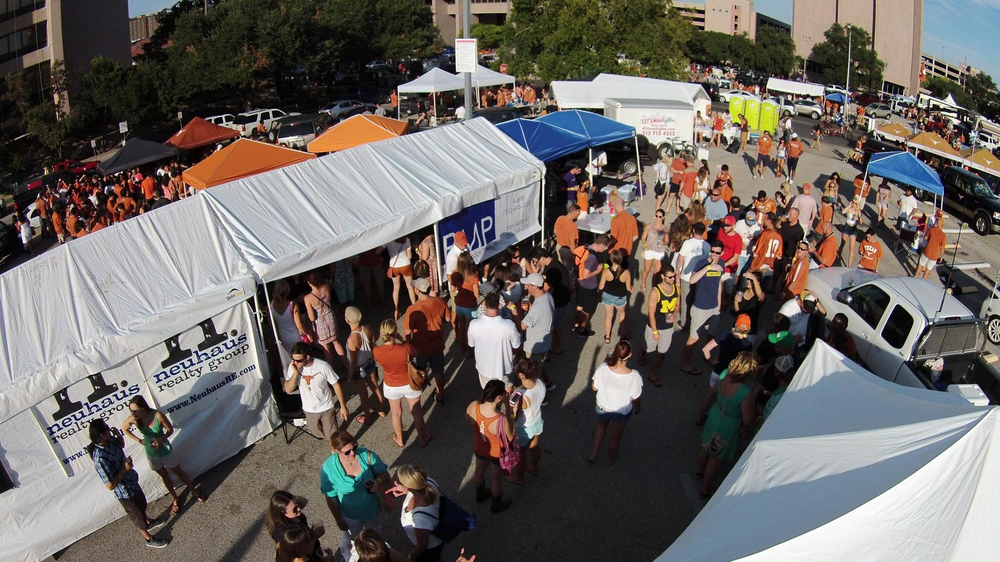

Tailgating has been a long time obsession for sports fans, though it probably didn't exist to the extremes that it does today. Today's tailgates are held in many different forms and many different places, but I'm only going to tell you about mine and what it has to offer. If you'd like to come out, it's free to the community. To see more photos and specifics on upcoming events/games, you can visit our Facebook Page!
"We May Not Win Every Game... But We Ain't Never Lost A Party" -Larry Wamble
Some tailgates are open to the public and charge, some are closed groups and some, like mine, are open to the public and free to attend with an RSVP. I'm able to do this because of sponsors who want to promote their companies or products. Feel free to Click Here if you want to RSVP
If you're looking for another option for a tailgate that is open to the public, you can always head down to Bevo Boulevard
Though I'm a fan of the place, I'm not a fan of this website. There's very little info on what to expect when you get there, no pictures, just some basic info.